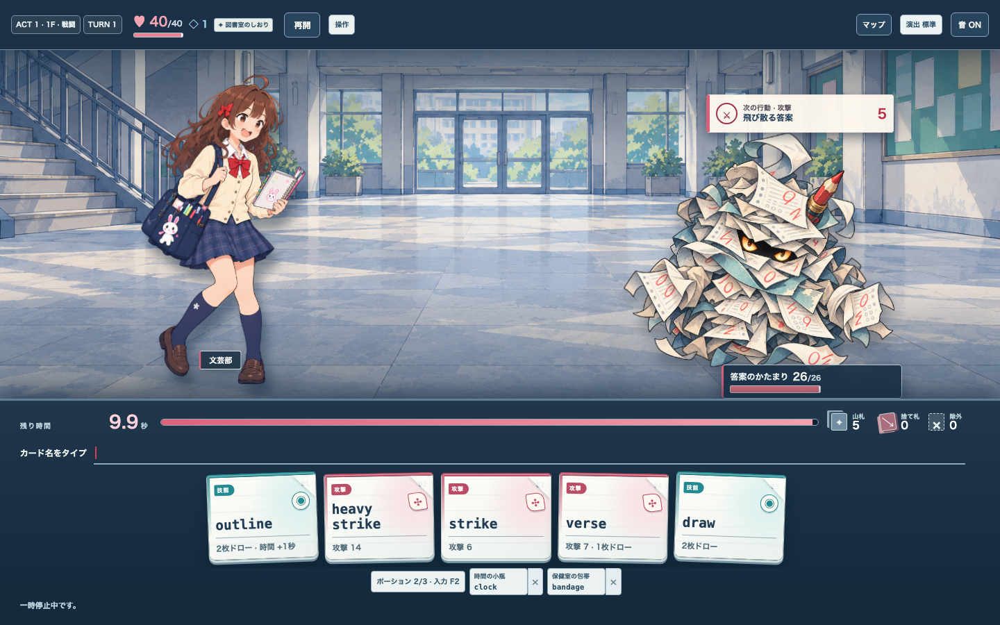
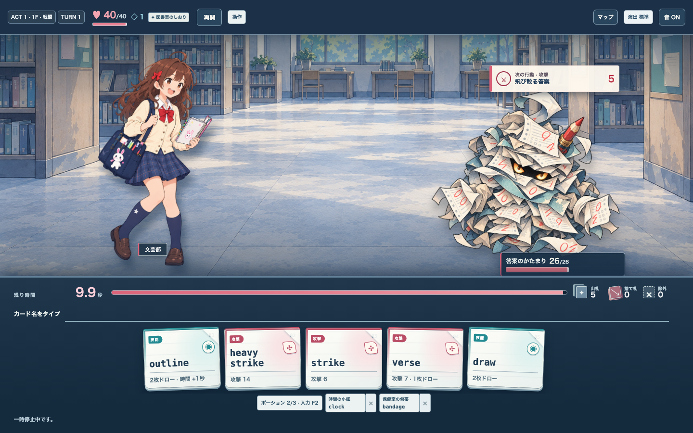
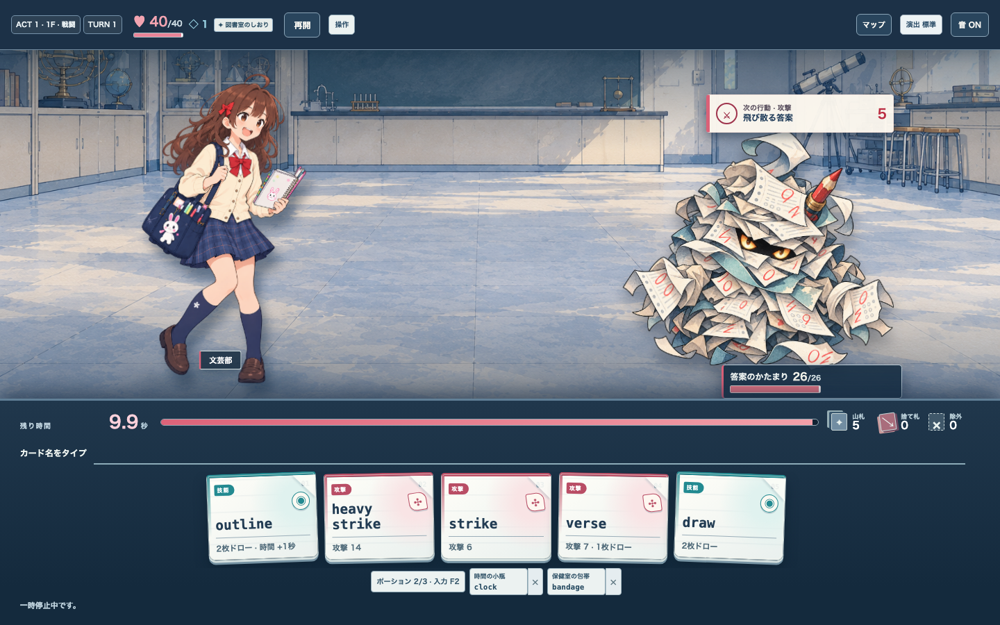
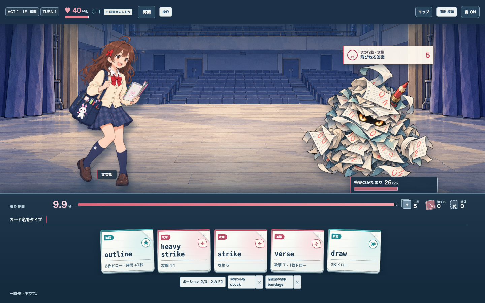
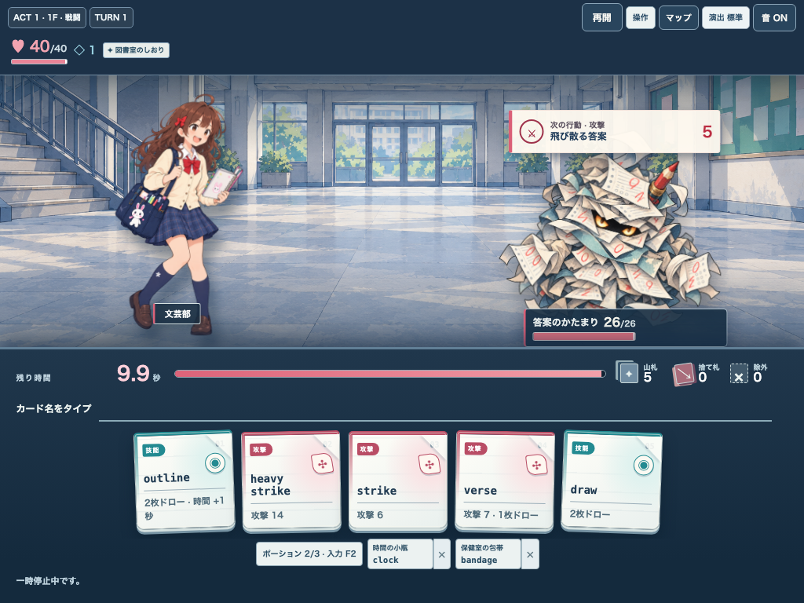
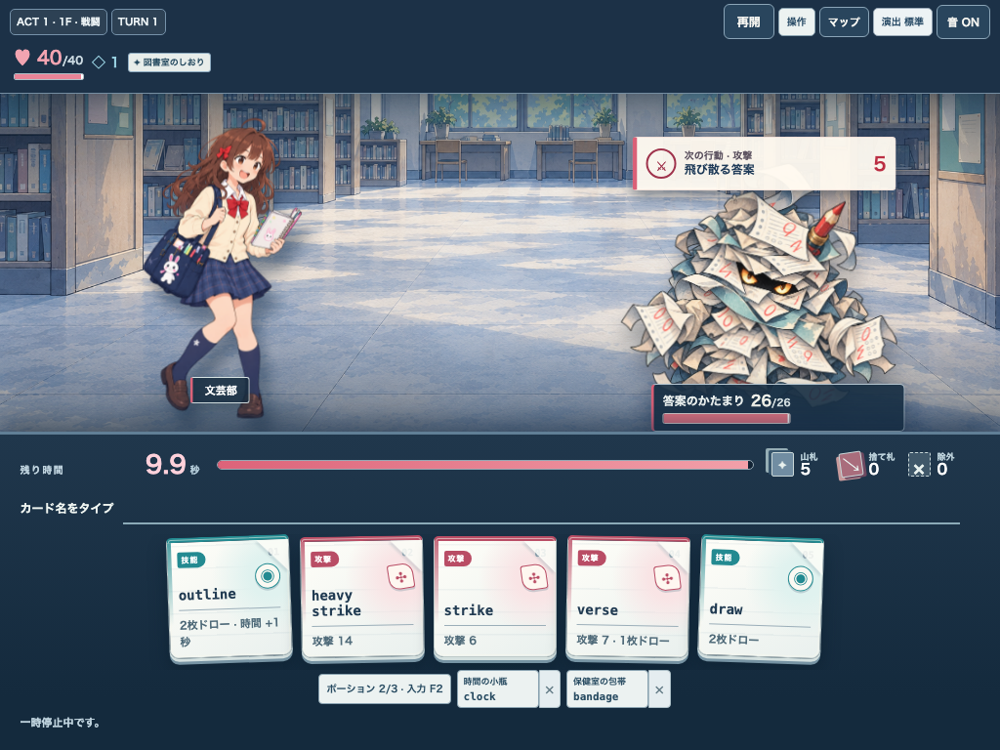
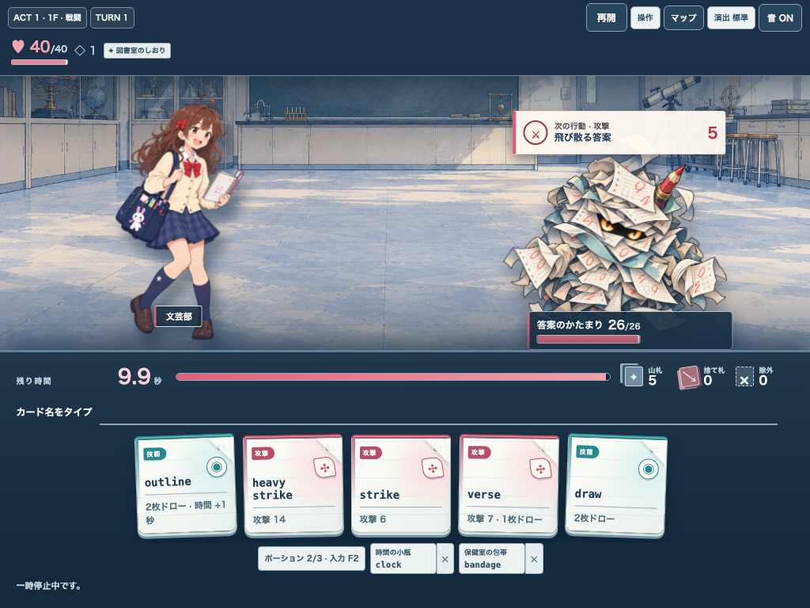
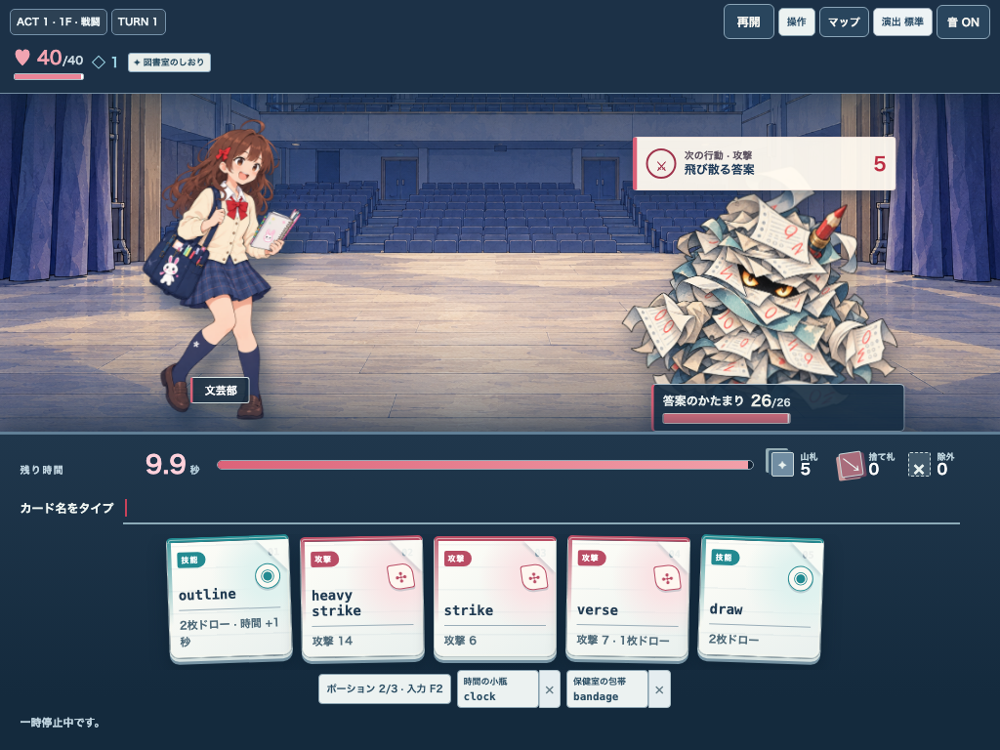

Issue #266 紙・ガッシュ調のAct別代表背景
同一seed・同一人物・同一敵・同一手札で背景だけ差し替えた。候補画像であり、ランタイム採用・3 Act完成・最終アート承認は示さない。
PC 1440×900

Act 1 アトリウム基準 #249
Act 1 図書閲覧室

Act 2 物理実験室
Act 3 講堂舞台
iPad相当 1024×768

Act 1 アトリウム基準 #249
Act 1 図書閲覧室

Act 2 物理実験室
Act 3 講堂舞台